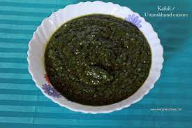
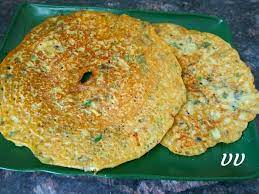

North state

Famous place of south state
New Delhi, NCR
New Delhi, the national capital of India, is a traveler’s paradise, to say the least. As a city that has seen the rise and fall of many dynasties, Delhi boasts of several monuments and heritage places that pay tribute to its rich cultural and political past. While there is a good range of historical places to visit in Delhi, the city doesn’t lack in gardens, museums, places of worship, adventure spots, and theme parks, either. Add to that the vibrant shopping destinations, local markets, and street food, Delhi easily tops the list of best tourist places in North India.

Shimla
Shimla, the picturesque capital city of Himachal Pradesh, is located at the foothills of the Himalayas and offers a unique travel experience with its snow-capped mountains, forests, lush green valleys, placid lakes, and pleasant climatic conditions. Apart from these natural attractions, the region also boasts of several man-made wonders including religious places, historical structures, museums, and the lively Mall Road. Away from the hustle-bustle of large cities, Shimla makes for one of the best honeymoon destinations in North India.
Agra
Agra, home to the famous Taj Mahal, counts among the top places to visit in North India and for all the right reasons. The historical city in Uttar Pradesh is a medley of grand monuments, exceptional architecture, and mesmerizing sights and sounds. It boasts of three UNESCO World Heritage sites, several enticing gardens, vibrant local markets, emporiums, and lip-smacking street food. Agra is also part of the famous Golden-Triangle circuit.


Kullu and Manali
Blessed with verdant greenery, pristine streams, meadows blooming with flowers, and pleasant climate, the twin towns of Kullu and Manali in Himachal Pradesh are among the most visited hill stations in North India. These towns, which are at a distance of about 40 km, are dotted with waterfalls, trekking trails, apple orchards, religious places, quaint villages, museums, and hip cafes, among others. While Kullu and Manali draw in a large number of couples, they are also a favorite with adventure seekers looking to indulge in trekking, paragliding, camping, river rafting, etc.
Mussoorie and Dehradun
The tree-covered hills and valleys of Dehradun and Mussoorie have attracted families and couples since the 1800s. Offering stunning views of Dehradun on one side and snow-capped Himalayan peaks on the other, the British rightly called Mussoorie, The Queen of Hill Stations. Located merely 33 km apart, these hills are also popular with trekkers. In addition to their natural beauty, Dehradun and Mussoorie boast of a number of institutions, churches, and summer palaces from the British-raj era.

Jim Corbett National Park
Jim Corbett National Park, Indian’s first national park, is renowned for being home to the largest tiger population in the country. The park also has an abundance of elephants, deer, leopards, bears, reptiles, and birds spread across hills, grasslands, and jungles. It is divided into 6 zones with each offering a unique experience and Dhikala is the most popular amongst them. Given its proximity to cities like Delhi, Jim Corbett is one of the most popular long weekend destinations in North India.
Amritsar
Amritsar is a treasure trove of spiritual and architectural beauty. It is home to the holiest shrine of the Sikhs, the Golden Temple or Sri Harmandir Sahib as it is popularly known. With bullet marks still visible on the walls of the Jallianwala Bagh, the city is a poignant reminder of India’s freedom struggle. The Change of Guard ceremony performed every evening at the Wagah-Attari border by soldiers of the Indian and Pakistani army is another reason Amritsar is worth visiting

Jaipur
With its rich history, Jaipur is a vibrant, flamboyant city that is listed as a UNESCO World Heritage Site. Its majestic past is visible in the form of palaces, some that still are home to the Royal family, forts, and monuments dotting the city. There are also a number of picturesque gardens and lakes in Jaipur. The city balances its heritage with all the conveniences of an urban metropolis as camels and buses share the same space. It is a part of the Golden-Triangle circuit that spread across Jaipur, Delhi, and Agra.
Udaipur
Udaipur, the crown city of Rajasthan, is a city of lakes and filled with rich history. The city abounds in natural beauty and is surrounded by the Aravalli hills which add to its scenic beauty. Udaipur has rightly been called the ‘Venice of the East’. Its palaces are architectural delights and display intricate glasswork and fascinating remnants from the time when Rajasthan was ruled by Maharajas. In addition to its palaces and forts, Udaipur is also dotted with a number of temples and has plenty of local markets to explore.


Jaisalmer
The golden dunes of Jaisalmer give it the moniker- the Golden city. The desert in itself is mesmerizing and stretches over thousands of kilometers. The Desert National Park is one of the few places in India to spot the endangered Indian bustard. Jaisalmer flaunts its rich past with Havelis, cenotaphs, and ornate forts. It is also home to many magnificent Hindu and Jain temples. Apart from its visual beauty, a camel ride across the Jaisalmer desert is a unique treat and an unforgettable experience.
FAMOUS FOOD OF SOUTH STATE

Ragan gosh
Rogan Josh is an aromatic lamb dish with flavors of browned onions, various spices and yoghurt. It is usually served with steamed rice and consists of pieces of lamb or mutton braised with gravy flavored with garlic, ginger and aromatic spices (cloves, bay leaves, cardamom, and cinnamon).

- If you want recipe of this food so please click the button Click me
Dham
Dham is a dish prepared by cooking red kidney beans (rajma), green lentils (moong daal) and rice in curd. It is served teamed with mash daal, boor ki kari and a sweet & sour sauce made from tamarind and jaggery (gur).
- Madra - a thick yogurt based gravy made from chickpeas
- Kale chane ka khatta - A tangy soup made with black chick peas
- Maa ki daal - A creamy gravy of black lentils
- Chawal - steamed rice
- Mukund wadi curry - Sundried lentil squares cooked in onion tomato gravy
- Matar Paneer - Cottage cheese and green peas curry
- Kaddu ka khatta - A tangy dry Pumpkin vegetable curry
- Bhey - A spicy Lotus Stem dish
- Meethe Chawal - Flavorful sweet rice with saffron and dry fruits
- Salad
- If you want recipe of this food so please click the button Click me
Makki Di Roti & sarson Da Saag
A classic Punjabi dish - sarson da saag te makki di roti. Best had with some white butter, jaggery or honey.This winter special combination makes everyone drool in winters. As a traditional punjabi dish, saag means green and sarso means mustard.

- If you want recipe of this food so please click the button Click me
Kafuli
Kafuli is a delicacy of Uttarakhand prepared out of leafy greens such as palak (spinach) and methi (fenugreek) leaves. It is also known as Dhapdi in Garhwal.
- If you want recipe of this food so please click the button Click me
Bajara khichdi
Bajra khichdi is a warming and nutritious khichdi variety made with pearl millet, mung lentils, ghee, spices and herbs. Since this khichdi is warming it is made during winter. Its also a staple food in the regions of Rajasthan and Haryana. There are many variations of making bajra khichdi.

- If you want recipe of this food so please click the button Click me
Tunday Kebabs
Tunde Ke Kabab, also known as Buffalo meat galouti kebab, is a dish made out of minced meat which is popular in Lucknow, India.[1] It is part of Awadhi cuisine. It is said to incorporate 160 spices. Tunde ke kabab were introduced to the Nawab of Awadh Wajid Ali Shah. Lucknow’s iconic eating joint Tunday Kababi, started in 1905, is famous for serving buffalo meat galouti kebab.

- If you want recipe of this food so please click the button Click me
Dal Baati Churma
Dal Baati Churma' is a traditional delicacy from the state of Rajasthan. It is associated with the festivals of Makar Sankranti and Diwali in the Dhundhand region. It is also prepared on special occasions like marriage ceremonies and housewarming. Dal Baati is eaten with Churma popularly in regions of Rajasthan and Haryana. Churma is a sweet delicacy made of coarsely grounded wheat flour, bajra (millet) flour, or semolina. It is made by grinding the fire-baked or fried dough balls and mixing it with ghee, powdered sugar, and dry fruits.

- If you want recipe of this food so please click the button Click me
Chole Bhature
Chole bhature is a food dish popular in the Northern areas of the Indian subcontinent. It is a combination of chana masala and bhatura/puri, a deep-fried bread made from maida. Chole bhature is often eaten as a breakfast dish, sometimes accompanied with lassi. It can also be street food or a complete meal and may be accompanied with onions, pickled carrots, green chutney or achaar.

- If you want recipe of this food so please click the button Click me
Chila
Chila is a Rajasthani breakfast dish generally made with gram flour/besan. Onion and spices are added and the batter is cooked like a dosa. I included jowar flour along with besan and mixed cucumber and amaranth leaves which make this simple dish a wholesome healthy food!
- If you want recipe of this food so please click the button Click me